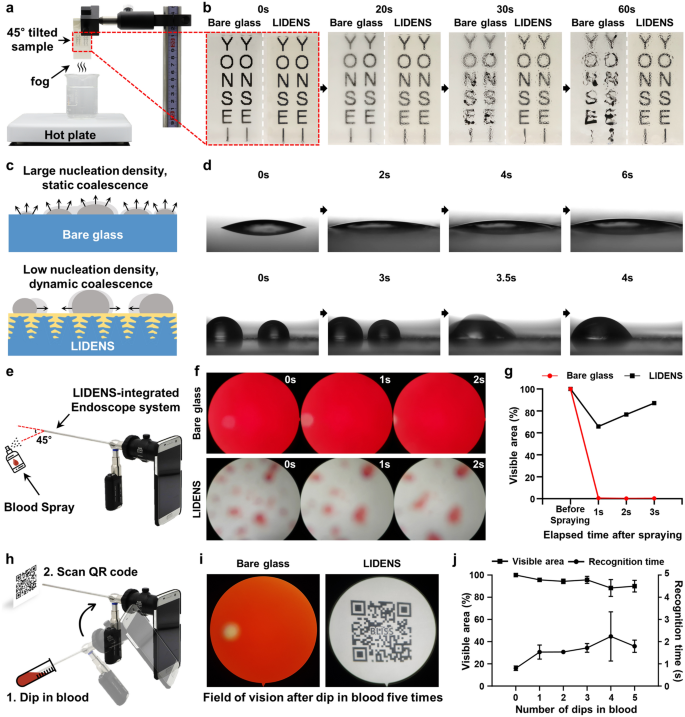

Research context and placement
Public text directly addresses lens blood/protein fouling and lubricant maintenance/reprocessing.
Research background
Antifouling lenses also require transparency and durability. Direct engraving addresses detachment associated with particle coatings. A repellent lens is not useful if its structure compromises transmission. Repeated contact and sterilization can also change an initially effective surface, requiring optical, surface and maintenance conditions to be evaluated together.
Approach and advances
Laser structures receive a fluorinated layer and lubricant. Comparing lubricant transmission led to a near-index-matched choice, making infusion an optical as well as repellency design. Direct engraving leaves the supporting structure in the lens rather than in an added particle layer. The fluorinated treatment favors lubricant retention, while the liquid fills that structure; the solid scaffold and liquid interface perform different jobs.

Tests comparing optical visibility of LIDENS-treated glass under steam and blood exposure.
Yeontaek Lee, Yong-Woo Chung, Jaeho Park et al.. “Lubricant-infused directly engraved nano-microstructures for mechanically durable endoscope lens with anti-biofouling and anti-fogging properties”. Figure 4. DOI: 10.1038/s41598-020-74517-8. CC BY 4.0. Public original image copied byte-for-byte, with no resizing, cropping, annotations or re-encoding.
Source figure and caption ↗ · DOI: 10.1038/s41598-020-74517-8 ↗ · CC BY 4.0 ↗
Evaluation and conditions
Tests address optics, blood, condensation, peeling, abrasion and sterilization. Visibility and surface damage provide complementary endpoints. Peeling/abrasion probe structural damage, whereas blood and condensation tests probe effects on visibility. Sterilization adds temperature/pressure and lubricant replenishment, making it a separate maintenance condition rather than another interchangeable wear count.
Key findings
Tape-peeling tests showed better retention of structure and wetting properties for LIDENS than for the particle-based coating control. Separate linear-abrasion tests compared LIDENS before and after loading, finding retained structure and small changes in contact angle and hysteresis. Relubrication restored poststerilization performance, distinguishing a durable engraved scaffold from a replenishable liquid layer. Recovery through replenishment does not imply that lubricant is never depleted.
Limits and open questions
Sterilization includes relubrication each cycle. It does not establish maintenance-free life; structure, optics and loading must be matched. Clinical comparisons must match when lubricant is replenished as well as how sterilization is performed. The read experiments support condition-specific optical and durability claims, not a complete service-life estimate for repeated surgery.
Related external research
Bioinspired self-repairing slippery surfaces with pressure-stable omniphobicity
Compare SLIPS lubrication with LIDENS optical-transmission requirements.
Generic repellency does not establish endoscopic visibility.
Abstract checkedCorresponding-author verification
Jungmok Seo: corresponding authorThis record concerns Jungmok Seo’s correspondence designation. Author order or an asterisk alone is not treated as confirmation; this check is separate from verification of the research content.
- Correspondence evidence source ↗
corresp="yes"
contrib[@corresp="yes"]/name and address/email for Jeon and Seo · public_repository_xml_author_and_correspondence_read
- Main-text review scope
- Europe PMC XML Results and discussion: structure/design, optics, blood/fogging, tape-peel/abrasion and autoclave/relubrication tests. Additional targeted main-text reading in this pass: Results and discussion, Fig. 1a lubricant choice; Fig. 3 abrasion and autoclave paragraphs, explicit relubrication and contrast with particle-based coating. SI referenced by body was not separately read. This additional reading refers to main text, not supplementary information. The approval review distinguished direct particle-based-coating comparison in tape peeling, before/after abrasion within LIDENS, and repeated autoclaving with relubrication.
- Supplementary review scope
- Supplementary information was not read. No supplementary material is listed as reviewed, and a complete SI audit is not claimed.
- Pending verification
- SI and direct comparison with the current publisher version remain unaudited. Main-text sterilization tests include relubrication and do not establish maintenance-free or clinical reuse life.
COVERAGE & OUTREACH
Coverage and outreach
Links are checked for their relationship to this paper. Media publication does not establish independent reporting or additional experimental validation.
No related outreach link was verified against its body within these searches. This does not establish that none exists.
Channel coverage and search log for all 101 records →Sources and verification scope
Europe PMC XML Results and discussion: structure/design, optics, blood/fogging, tape-peel/abrasion and autoclave/relubrication tests. Additional targeted main-text reading in this pass: Results and discussion, Fig. 1a lubricant choice; Fig. 3 abrasion and autoclave paragraphs, explicit relubrication and contrast with particle-based coating. SI referenced by body was not separately read. This additional reading refers to main text, not supplementary information. The approval review distinguished direct particle-based-coating comparison in tape peeling, before/after abrasion within LIDENS, and repeated autoclaving with relubrication.
The additional commentary is editorially approved within the stated evidence scope. This does not imply complete verification of all main-text and supplementary material.
- Additional main-text review scope
- Europe PMC XML Results and discussion: structure/design, optics, blood/fogging, tape-peel/abrasion and autoclave/relubrication tests. Additional targeted main-text reading in this pass: Results and discussion, Fig. 1a lubricant choice; Fig. 3 abrasion and autoclave paragraphs, explicit relubrication and contrast with particle-based coating. SI referenced by body was not separately read. This additional reading refers to main text, not supplementary information.
- Additional supplementary review scope
- Supplementary information was not read. No supplementary material is listed as reviewed, and a complete SI audit is not claimed.
- Public publication baseline ↗ · #56 · 2026-10-03
- Crossref metadata ↗: Only public bibliographic metadata registered with Crossref was checked. This does not mean that the publisher page, abstract, or full text was read; full-text verification in the school Chrome session remains pending. The titles differ after normalization and require manual review. The original title was not changed. The original nanostructures differs from canonical nano-microstructures; the length-scale wording requires review. license_urls lists registered links and does not establish permission to redistribute text or figures. It may include TDM or posting-policy links.
- Lubricant-infused directly engraved nano-microstructures for mechanically durable endoscope lens with anti-biofouling and anti-fogging properties ↗
public_full_text_via_EuropePMC_XML · Europe PMC REST /PMC7566624/fullTextXML; Results and discussion: design, optics, tape-peel/abrasion and autoclave/re-lubrication tests; DOI matched. Checked 2026-10-03. - Lubricant-infused directly engraved nano-microstructures for mechanically durable endoscope lens with anti-biofouling and anti-fogging properties ↗
public_repository_full_text · Results and discussion, Fig. 1a lubricant choice; Fig. 3 abrasion and autoclave paragraphs, explicit relubrication and contrast with particle-based coating. SI referenced by body was not separately read. - Lubricant-infused directly engraved nano-microstructures for mechanically durable endoscope lens with anti-biofouling and anti-fogging properties ↗
public_repository_full_text · Results and discussion, Fig. 3a–c: direct particle-based-coating comparison in tape peeling; Fig. 3d–f: within-LIDENS before/after linear abrasion; Fig. 3g–h: repeated autoclaving with relubrication. Referenced SI was not separately audited. - Lubricant-infused directly engraved nano-microstructures for mechanically durable endoscope lens with anti-biofouling and anti-fogging properties ↗
independent_reviewer_selected_main_text · Results/Discussion lubricant/index choice and Fig.3 tape-peeling, abrasion, autoclave with relubrication. - Additional commentary source ↗
Research background · Europe PMC REST /PMC7566624/fullTextXML; Results and discussion: design, optics, tape-peel/abrasion and autoclave/re-lubrication tests; DOI matched. Checked 2026-10-03. · public_full_text_via_EuropePMC_XML - Additional commentary source ↗
Evaluation and conditions · Europe PMC REST /PMC7566624/fullTextXML; Results and discussion: design, optics, tape-peel/abrasion and autoclave/re-lubrication tests; DOI matched. Checked 2026-10-03. · public_full_text_via_EuropePMC_XML - Additional commentary source ↗
Limits and open questions · Europe PMC REST /PMC7566624/fullTextXML; Results and discussion: design, optics, tape-peel/abrasion and autoclave/re-lubrication tests; DOI matched. Checked 2026-10-03. · public_full_text_via_EuropePMC_XML - Additional commentary source ↗
Connections to related work · REST core record abstractText read; PMID 21938066; checked 2026-10-03. External main text not used for the comparison. · public_abstract_via_EuropePMC_API - Additional commentary source ↗
Approach and advances · Results and discussion, Fig. 1a lubricant choice; Fig. 3 abrasion and autoclave paragraphs, explicit relubrication and contrast with particle-based coating. SI referenced by body was not separately read. · public_repository_full_text - Additional commentary source ↗
Key findings · Results and discussion, Fig. 3a–c: direct particle-based-coating comparison in tape peeling; Fig. 3d–f: within-LIDENS before/after linear abrasion; Fig. 3g–h: repeated autoclaving with relubrication. Referenced SI was not separately audited. · public_repository_full_text